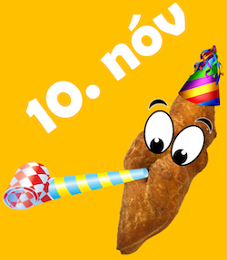

10. nóvember

Það er alþekkt í löndunum í kringum okkur að vinsælt bakkelsi og aðrir réttir eigi sér sinn eigin dag. Sem dæmi má nefna pönnukökudaginn í Danmörku og kanelsnúðadaginn í Svíþjóð, en talið er að um 9 milljón kanelsnúðar séu borðaðir þann dag. Það jafnast á við að um 300 þúsund kleinur yrðu borðaðar á Íslandi á kleinudeginum. Væri það ekki stórkostlegt?
Kleinudeginum er að vitaskuld best að fagna með því að fá sér kleinu og við hvetjum bakarí, kaffihús, verslanir og vinnustaði til að sjá til þess að kleinur verði á boðstólnum. Á Instagramsíðunni @Kleinudagurinn verður myndum deilt og fólk hvatt til að deila mynd af kleinunni sinni.
Bolludagur,sumardagurinn fyrsti, páskar og svo mætti lengi telja. Fagnaðerefni eru næg á vorönn. En hverju fögnum við á haustin? Nóvember veitir ekki af séríslenskum hátíðardegi og það er fátt betra fyrir sálina á dimmum haustdögum en að gæða sér á nýsteiktri kleinu með sínum nánustu.
Fjölmiðlar hafa óskað eftir viðtölum við vini kleinunnar en auðvitað eru það frekar þau sem eiga heiðurinn að kleinum landsins sem eiga að vera í sviðsljósinu. Þau sem vilja vera á lista yfir aðila sem ætla að fagna kleinudeginum og eru til í að veita viðtal tengt því geta því sent tölvupóst á hallo@kleinudagurinn.is með upplýsingum um nafn, símanúmer, fyrirtæki/starfsemi. Fréttatilkynning, með listanum, verður send á fjölmiðla 8. nóvember.
Vinir kleinunnar hafa enga hagsmuni af kleinudeginum heldur er eingöngu um að ræða verkefni sprottið af áhuga leikmanna til að láta eitthvað gott af sér leiða í þágu kleinunnar og íslensks þjóðlífs! Við trúum því að kleinudagurinn sé kominn til að vera. Tökum höndum saman og festum kleinudaginn í sessi!